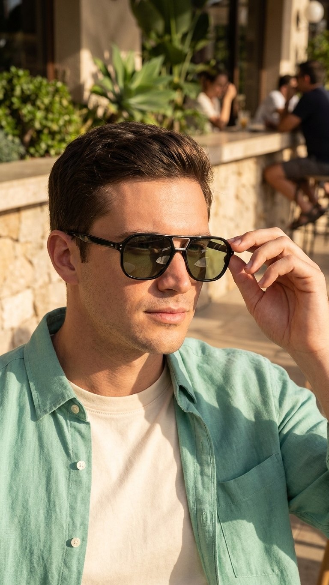
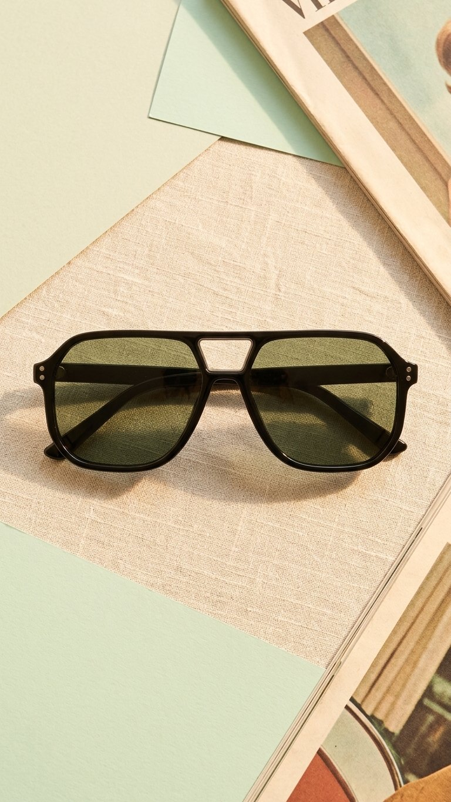
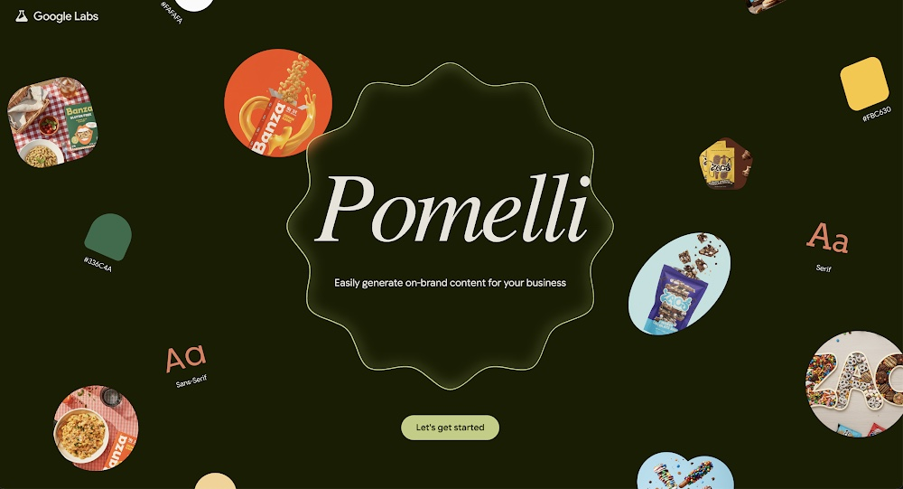
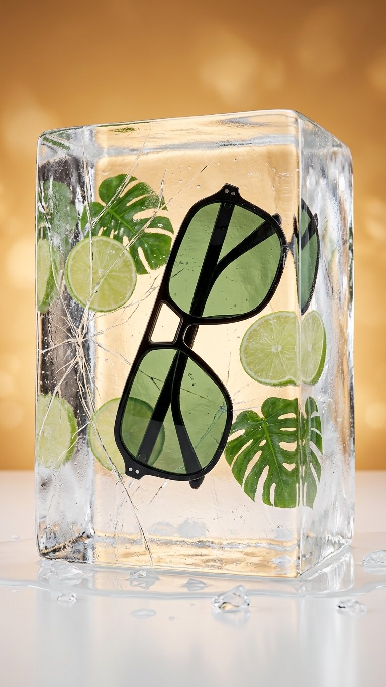
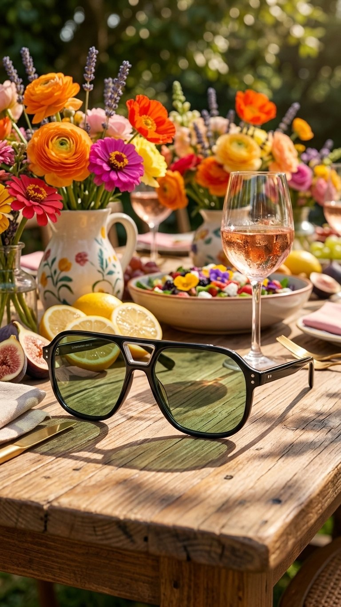
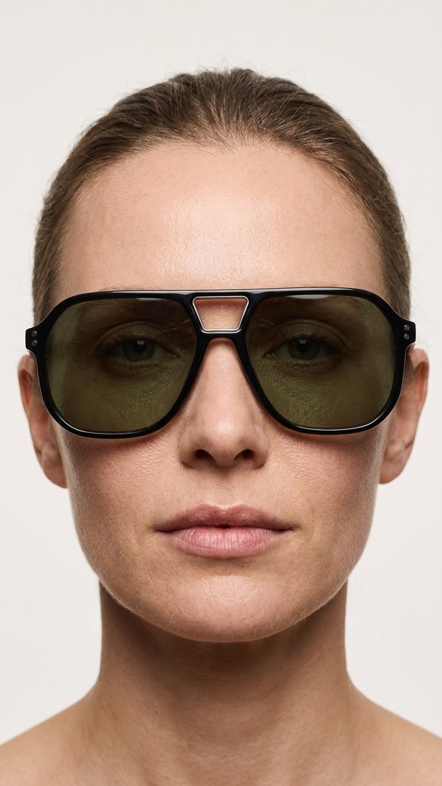
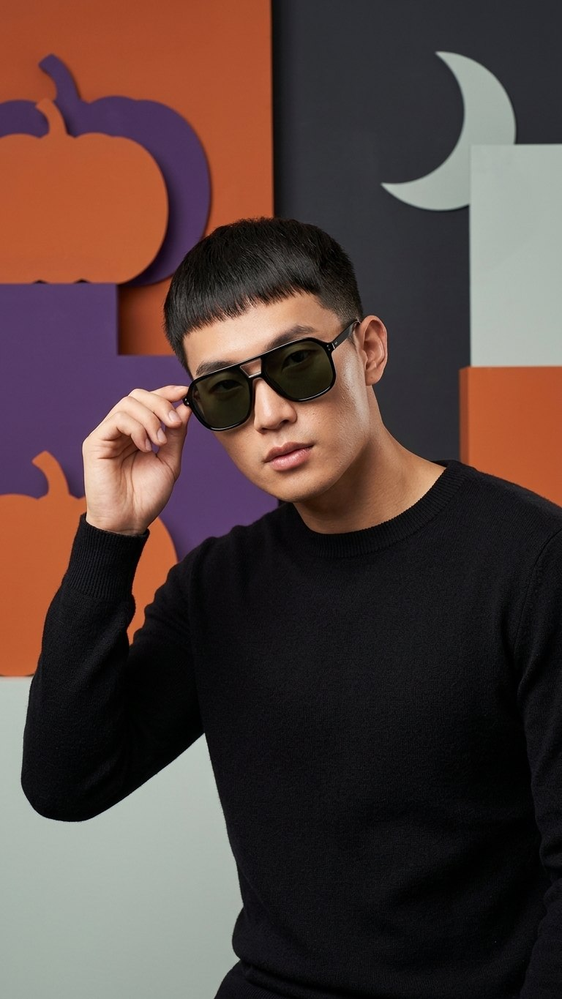

Google for Startups
Deploying Agentic Workflows at Scale
Strip the guardrails as the models earn it.
How to build the guardrails.
And you can’t loosen them until you know the model has earned it.
AI should amplify them. Not replace them. It could be the point.
Set it and forget it.
The user engages about as much. The work that gets done is far bigger.

Recorded in Pomelli · opulize.com
“This brand radiates a timeless, effortless elegance that feels at once refined and…”
If you don’t define what done looks like, the agent will decide for you.

Expected
Not price per token. A cheap model that needs three retries can cost more than a good one that gets it right the first time.
Those five answers are the spec for your guardrails.
Clever prompting gets you a demo. Product-grade engineering gets you a launch.
Worst case, an agent with no exit strategy just keeps going. Or breaks in unexpectedly bad ways.




A prompt telling your agent not to do something isn’t a guardrail. It’s a wish.
Repeat until good enough. Good enough is a judgment call.